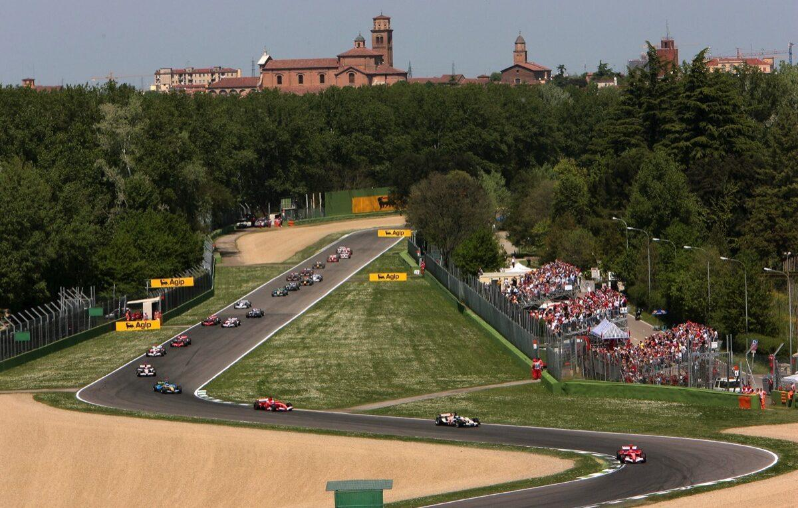
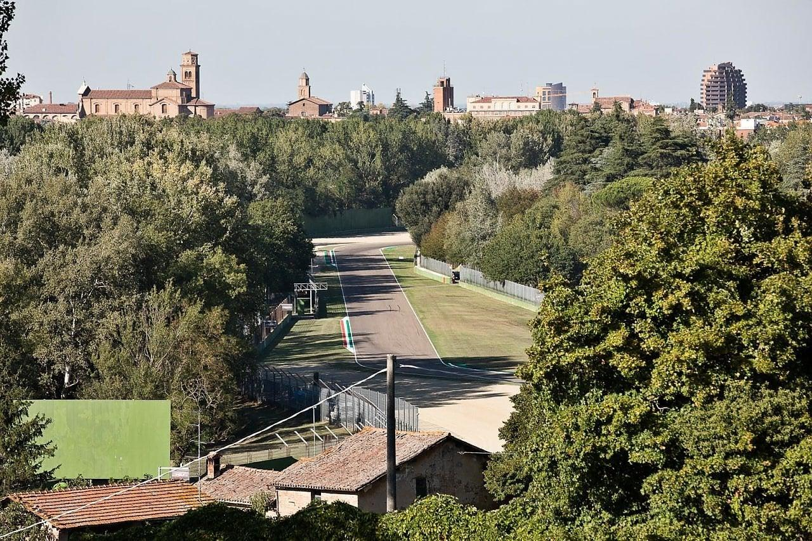
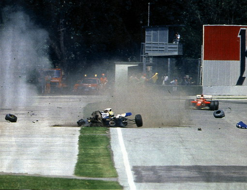
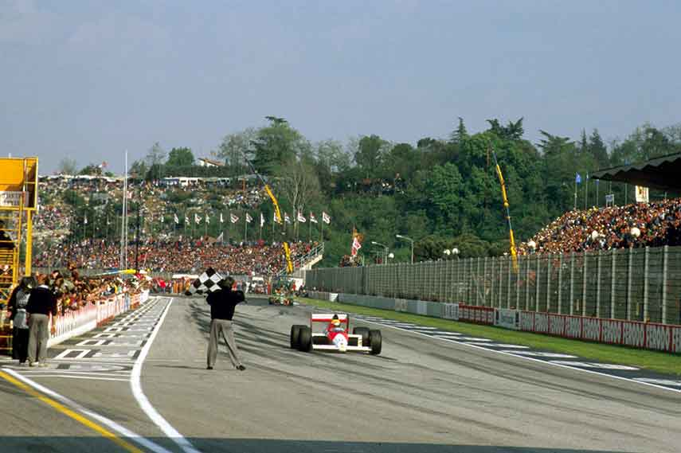
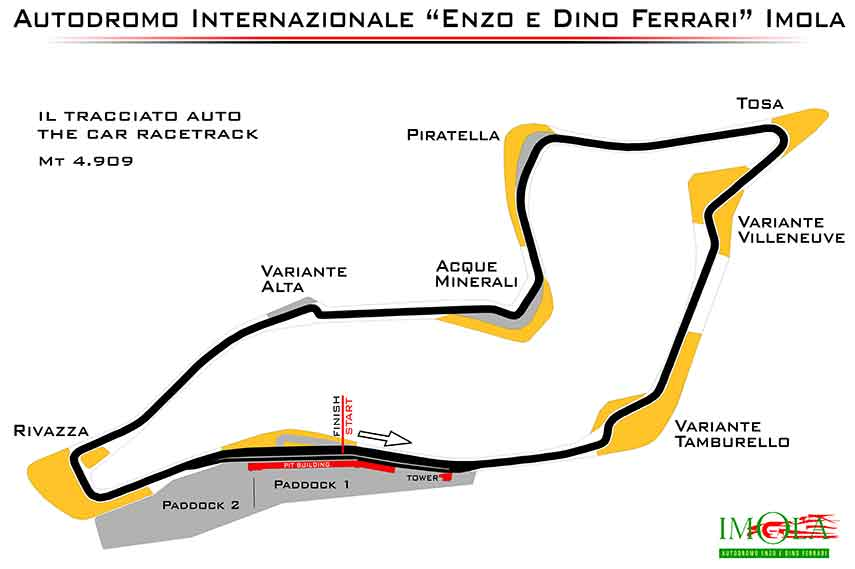
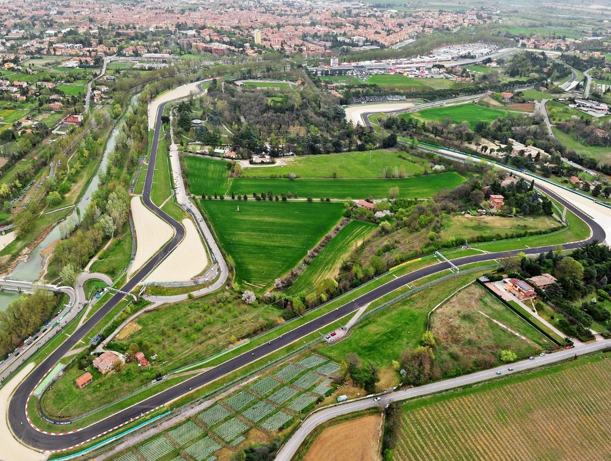
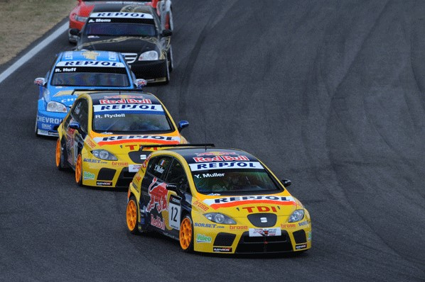

Introductie:
Het Autodromo Enzo e Dino Ferrari, beter bekend als het Imola Circuit, is een legendarisch autosportcircuit gelegen in Imola, Italië. Dit circuit is van groot belang in de motorsportwereld vanwege zijn rijke geschiedenis, uitdagende lay-out en tragische gebeurtenissen die zich hier hebben afgespeeld.
Het circuit bevindt zich in de regio Emilia-Romagna, ongeveer 40 kilometer ten oosten van Bologna. Wat het bijzonder interessant maakt, is de mix van snelheid en technische uitdagingen die het biedt aan zowel coureurs als fans. Het Imola Circuit is vaak het toneel geweest van intense races en dramatische momenten die motorsportliefhebbers over de hele wereld hebben gefascineerd.
Het circuit heeft een rijke geschiedenis die teruggaat tot 1953, toen het voor het eerst werd geopend voor races. Sindsdien heeft het talloze veranderingen ondergaan en heeft het circuit verschillende lay-outs gekend. Het is ook berucht vanwege een van de donkerste dagen in de Formule 1-geschiedenis, toen Ayrton Senna en Roland Ratzenberger tragische ongelukken hadden tijdens het raceweekend van 1994.
klik hier om naar het circuit 'Imola' te gaan:
 
Geschiedenis:
Het Imola Circuit, is een historisch autosportcircuit in Imola, Italië. Sinds de opening in 1953 heeft het circuit verschillende transformaties ondergaan en een rijke geschiedenis opgebouwd.
Dit 4,9 kilometer lange circuit staat bekend om zijn uitdagende lay-out met 19 bochten, hoogteverschillen tot 40 meter en beroemde bochten zoals Tamburello, Variante Alta en Acque Minerali. Het circuit verwierf internationale bekendheid als gastheer van de Formule 1 Grand Prix van San Marino van 1980 tot 2006, maar werd tragisch beroemd door het fatale ongeluk van Ayrton Senna in 1994.
Na het ongeluk werden veiligheidsverbeteringen doorgevoerd, waaronder aanpassingen aan de Tamburello-bocht. Hoewel het geen Formule 1-races meer organiseert, blijft Imola races hosten in andere kampioenschappen zoals het World Touring Car Championship (WTCC) en het Superbike World Championship.
Het circuit is open voor publieksevenementen, en de officiële website biedt informatie over openingstijden en toegangsprijzen. Het Imola Circuit blijft een iconische locatie in de motorsportgeschiedenis en trekt nog steeds motorsportfans en coureurs van over de hele wereld aan. Linksonder zie je de foto van Ayrton Senna tijdens de crash.
 
Technische Details:
Het Imola Circuit heeft een lengte van ongeveer 4,9 kilometer (3,05 mijl) en is een van de kortere Formule 1-circuits, maar het is uiterst uitdagend vanwege zijn technische aard. Het circuit heeft in totaal 19 bochten, waaronder snelle bochten, chicanes en haarspeldbochten. De hoogteverschillen op het circuit voegen extra complexiteit toe aan de races, met een hoogteverschil van ongeveer 40 meter tussen het laagste en hoogste punt.
 
Beroemde Evenementen:
Het Imola Circuit is beroemd geworden vanwege zijn rol als gastheer van enkele van de meest prestigieuze en opwindende motorsportevenementen in de geschiedenis. Hier zijn enkele van de beroemdste evenementen die op dit legendarische circuit hebben plaatsgevonden:
1. Formule 1 Grand Prix van San Marino: Het hoogtepunt van de motorsport op het Imola Circuit was de Formule 1 Grand Prix van San Marino, die hier van 1980 tot 2006 werd gehouden. Deze race werd jaarlijks gehouden en trok veel topteams en coureurs naar Imola. Het circuit stond bekend om zijn uitdagende bochten en technische aard, wat zorgde voor opwindende races en onvoorspelbare resultaten. De race had een speciale plaats in het hart van Formule 1-fans over de hele wereld.

2. Andere internationale motorsportevenementen: Naast de Formule 1 heeft het Imola Circuit verschillende andere internationale races gehost, waaronder evenementen in het World Touring Car Championship (WTCC) en het Superbike World Championship. Deze evenementen trekken een breed scala aan racefanaten en coureurs aan en bieden spannende races op dit uitdagende circuit.
Hoewel de Formule 1 niet langer op regelmatige basis op Imola plaatsvindt, heeft het circuit zijn status behouden als een historische en iconische locatie in de motorsportwereld. Het blijft een plek waar motorsportgeschiedenis is geschreven en waar fans nog steeds samenkomen om de rijke erfenis van het circuit te eren en te genieten van spannende races op deze legendarische baan.

Bezoekersinformatie:
Het Imola Circuit is open voor het publiek en organiseert regelmatig races en evenementen. De openingstijden variëren afhankelijk van het geplande evenement, dus het is raadzaam om de officiële website van het circuit te raadplegen voor actuele informatie over tijden, toegangsprijzen en komende evenementen.
Fans die het circuit bezoeken, kunnen genieten van een spannende race-ervaring en de rijke motorsportgeschiedenis van deze locatie verkennen. Er zijn vaak mogelijkheden om de pitstraat te bezoeken en een kijkje achter de schermen te nemen.
Kortom, het Imola Circuit is een van de meest iconische en historische circuits in de motorsportwereld. Het biedt een mix van uitdagingen voor coureurs en blijft fascineren met zijn rijke geschiedenis en emotionele betekenis voor fans over de hele wereld.
klik hier om een kijkje te nemen op de website van circuit Imola:
Rijd een ronde mee over het circuit Imola: